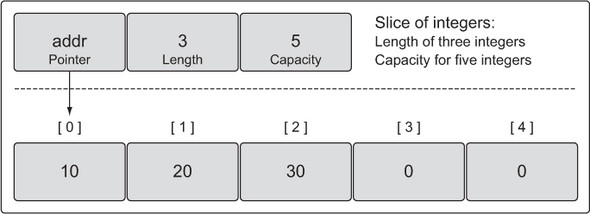
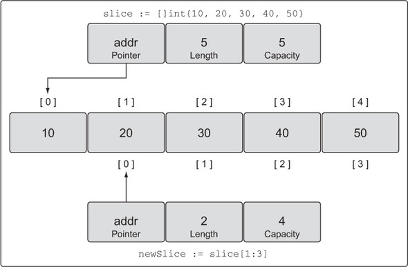
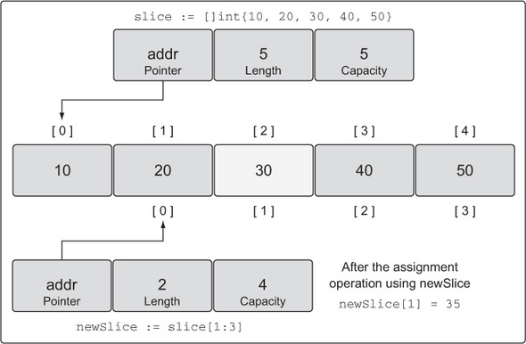
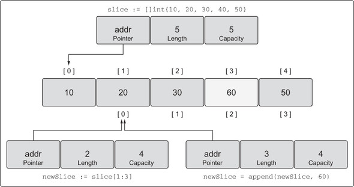
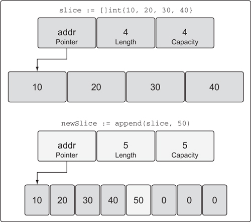
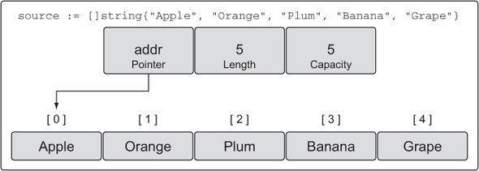
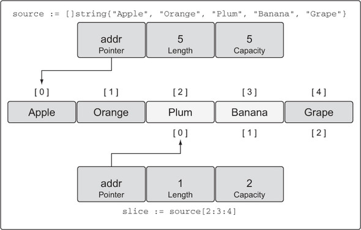

Slices
Slices - dynamic arrays that can shrink and grow
Make and slice literals
// Create a slice of strings.
// Contains a length and capacity of 5 elements.
slice := make([]string, 5)
// Create a slice of integers.
// Contains a length of 3 and has a capacity of 5 elements.
slice := make([]int, 3, 5)

// Create a slice of integers.
// Make the length larger than the capacity.
slice := make([]int, 5, 3)
Compiler Error:
len larger than cap in make([]int)
// Create a slice of strings.
// Contains a length and capacity of 5 elements.
slice := []string{"Red", "Blue", "Green", "Yellow", "Pink"}
// Create a slice of integers.
// Contains a length and capacity of 3 elements.
slice := []int{10, 20, 30}
// Create a slice of strings.
// Initialize the 100th element with an empty string.
slice := []string{99: "99"}
Notice, if you specify a value inside the [ ] operator, you’re creating an array. If you don’t specify a value, you’re creating a slice.
// Create an array of three integers.
array := [3]int{10, 20, 30}
// Create a slice of integers with a length and capacity of three.
slice := []int{10, 20, 30}
Declaring a nil slice
A nil slice is the most common way you create slices in Go. They can be used with many of the standard library and built-in functions that work with slices. They’re useful when you want to represent a slice that doesn’t exist, such as when an exception occurs in a function that returns a slice

// Use make to create an empty slice of integers.
slice := make([]int, 0)
// Use a slice literal to create an empty slice of integers.
slice := []int{}
An empty slice contains a zero-element underlying array that allocates no storage. Empty slices are useful when you want to represent an empty collection, such as when a database query returns zero results

Working with slices
Declaring an array using an array literal
// Create a slice of integers.
// Contains a length and capacity of 5 elements.
slice := []int{10, 20, 30, 40, 50}
// Change the value of index 1.
slice[1] = 25
Taking the slice of a slice
// Create a slice of integers.
// Contains a length and capacity of 5 elements.
slice := []int{10, 20, 30, 40, 50}
// Create a new slice.
// Contains a length of 2 and capacity of 4 elements.
newSlice := slice[1:3]

Calculating the length and capacity for any new slice is performed using the following formula.
making changes to a slice
// Create a slice of integers.
// Contains a length and capacity of 5 elements.
slice := []int{10, 20, 30, 40, 50}
// Create a new slice.
// Contains a length of 2 and capacity of 4 elements.
newSlice := slice[1:3]
// Change index 1 of newSlice.
// Change index 2 of the original slice.
newSlice[1] = 35

Runtime error showing index out of range
// Create a slice of integers.
// Contains a length and capacity of 5 elements.
slice := []int{10, 20, 30, 40, 50}
// Create a new slice.
// Contains a length of 2 and capacity of 4 elements.
newSlice := slice[1:3]
// Change index 3 of newSlice.
// This element does not exist for newSlice.
newSlice[3] = 45
Runtime Exception:
panic: runtime error: index out of range
Using append to add an element to a slice
// Create a slice of integers.
// Contains a length and capacity of 5 elements.
slice := []int{10, 20, 30, 40, 50}
// Create a new slice.
// Contains a length of 2 and capacity of 4 elements.
newSlice := slice[1:3]
// Allocate a new element from capacity.
// Assign the value of 60 to the new element.
newSlice = append(newSlice, 60)

// Create a slice of integers.
// Contains a length and capacity of 4 elements.
slice := []int{10, 20, 30, 40}
// Append a new value to the slice.
// Assign the value of 50 to the new element.
newSlice := append(slice, 50)
Using append to increase the length and capacity of a slice
// Create a slice of integers.
// Contains a length and capacity of 4 elements.
slice := []int{10, 20, 30, 40}
// Append a new value to the slice.
// Assign the value of 50 to the new element.
newSlice := append(slice, 50)

Three index slices
Declaring a slice of string using a slice literal
// Create a slice of strings.
// Contains a length and capacity of 5 elements.
source := []string{"Apple", "Orange", "Plum", "Banana", "Grape"}

Performing a three-index slice
// Slice the third element and restrict the capacity.
// Contains a length of 1 element and capacity of 2 elements.
slice := source[2:3:4]
A representation of the new slice after the operation 
How length and capacity are calculated